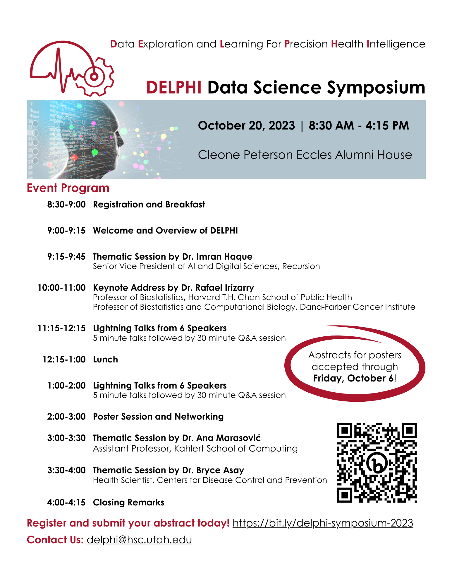

Previous Events
Digital Humanities Utah 2024 (DHU8)
Dates: February 23-24, 2024
Location: University of Utah
Additional information about Digital Humanities Utah can be found on the dhutah.org webpage. Register for DHU8 today!
Utah Data Science Day
Date: Friday, January 12, 2024
Time: 9:30am - 3:30pm
Location: A. Ray Olpin Union Ballroom
Register and submit to share something during the afternoon research expo here.
For sponsorship opportunities and participation in the career fair contact Sheri Carp directly.
DELPHI Symposium
Date: Friday, October 20, 2023
Time: 8:30am - 4:15pm
Location: Cleone Peterson Eccles Alumni House
Register and submit your abstract for a poster or lightning talk here. 
Fall 2023 Networking Event
Date: September 12, 2023
Time: 5pm - 7pm
Location: Thomas S. Monson Center
This networking event is for all data science faculty, staff, and community partners and will include organized and casual opportunities to meet your future collaborators. The One Utah Data Science Hub will also be introducing our Fall 2023 Seed Grant Program, which will focus on funding projects sprouting from new collaborations.
DATASET Discovery Workshops
Bias, Ethics, and Trustworthiness in Data Science and AI
This is an in-person, mixer event that explores the challenges and opportunities of data science and AI in the modern world.
Join us over lunch for a mixer event that will include lightning talks, poster presentations, and engaging networking opportunities with researchers across campus who are delving into the ethical considerations of data science and AI. Together, we will highlight the importance of conducting trustworthy research and identify ways to mitigate bias in our data and analyses. We look forward to seeing you!
Date: September 15, 2023
Time: 11AM - 2PM
Location: Henriksen Conference Room, Cleone Peterson Eccles Alumni House.
If you are interested in attending the mixer event, please register here.
If you would like to share your research as a presenter of a 4-minute lightning talk speaker or poster at the event, please submit a brief abstract using this form by July 15. Note that submitting an abstract will automatically register you for the event.
We also encourage you to help us spread the word by sharing this invitation with your colleagues across campus.
This event is supported by the Data Science and Ethics of Technology (DATASET) Initiative. If you have any questions, please reach out to Rebecca Barter.